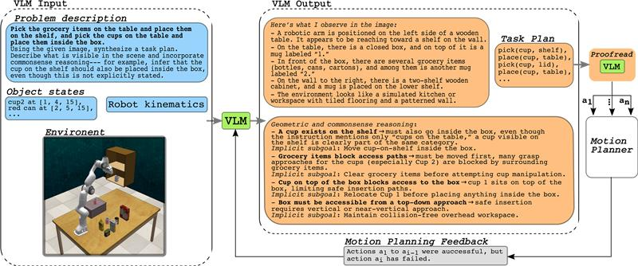

Plan Along the Way: Event-Triggered Foundation-Model Planning for TAMP Execution in Partially Observable Manipulation
RA-L, 2026 · IIIT Hyderabad
Foundation-model planning for task-and-motion execution under partial observability.